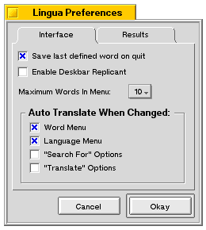
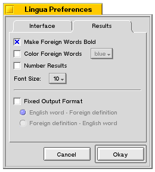

|
Lingua Documentation - Preferences Menu A Multilingual Translation Program |
|  |  |
Interface Tab
Save word on quit sets whether or not the word in the "Word:" box will be saved or discarded when you quit Lingua.
When Enable Deskbar Replicant is checked, a Deskbar replicant is created for Lingua. It will automatically remove itself when Lingua is quit, and then re-start the next time Lingua is run.
The Maximum words menu alters the number of words in the "Word:" menu, in the top left of the main interface. Extra words are dropped off the list.
The Auto Translate When Changed options determine what actions will cause Lingua to automatically translate words. For instance, if "Language Menu" is checked, and you pick a new language, the word currently in the "Word:" box is translated.
Results Tab
Make Foreign Words Bold, Color Foreign Words..., and Font Size alter the formatting of the foreign output. English output will always be in plain font.
Checking Number Results will prefix each result with a number.
By default, the output format switches between English - Foreign and Foreign - English depending on which Translation option is selected. By checking off Fixed Output Format, you will always have one of the two options for an output format.
Hitting Okay accepts changes, Cancel discards them.
Send comments, questions, and bug reports to dream@aevum.net
Usage of Lingua is subject to the licencing restrictions of the FPL